Aplicar las estructuras de repetición, mediante la propuesta de soluciones, para resolver problemas de ingeniería donde se requiere la iteración de tareas, con una actitud analítica, propositiva y responsable.
Algoritmo / FinAlgoritmo, asignación con = y punto y coma en declaraciones, lecturas, escrituras y asignaciones.4.1 · INTRODUCCIÓN A LOS CICLOS
Un ciclo permite repetir un conjunto de instrucciones mientras exista una razón para continuar. Todo ciclo debe tener un inicio, un cuerpo, una condición y un cambio que acerque el proceso a su terminación.
Dos ideas que no deben confundirse
Tipo de ciclo describe cómo se controla la repetición: determinado, indeterminado o mixto. Sentencia de ciclo es la herramienta que usamos para escribirlo: Para, Mientras o Repetir.
Por ejemplo, un ciclo determinado puede escribirse con cualquiera de las tres sentencias. Lo importante es que sabemos desde antes cuántas veces se repetirá. Un ciclo indeterminado, en cambio, termina por un evento, centinela o bandera y normalmente se expresa con Mientras o Repetir.
TIPOS DE CICLO SEGÚN SU CONTROL
Determinado
El número de repeticiones se conoce o puede calcularse antes de iniciar. Su control más común es un contador.
Indeterminado
No sabemos cuántas vueltas habrá. Termina por un dato, un evento, un centinela o un cambio de bandera.
Mixto
Combina un límite previsto con una condición que puede terminar el ciclo antes de alcanzar ese límite.
| Tipo | Repeticiones | Control | Sentencias habituales |
|---|---|---|---|
| Determinado | Conocidas o calculables. | Contador. | Para, Mientras, Repetir. |
| Indeterminado | No conocidas. | Centinela, condición, bandera. | Mientras, Repetir. |
| Mixto | Existe máximo, pero puede terminar antes. | Contador + bandera/condición. | Mientras o Repetir. |
SENTENCIAS DE CICLO: PARA, MIENTRAS Y REPETIR
Las sentencias son formas distintas de expresar una repetición. La elección depende de dónde conviene evaluar la condición y quién administra la variable de control.
Para
Integra valor inicial, límite y paso. Es muy natural para recorridos con contador.
Mientras
Evalúa la condición antes del cuerpo. Puede ejecutarse cero veces.
Repetir
Ejecuta el cuerpo primero y evalúa al final. Se ejecuta al menos una vez.
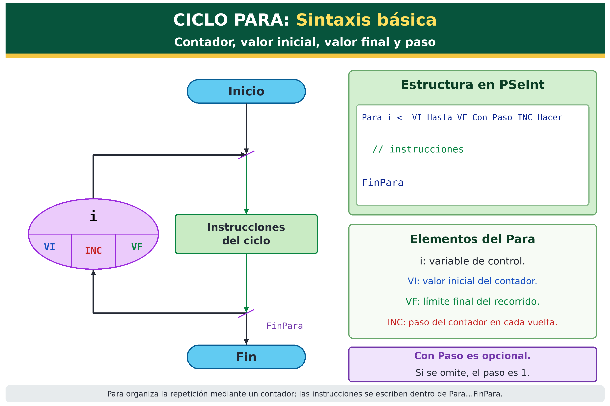
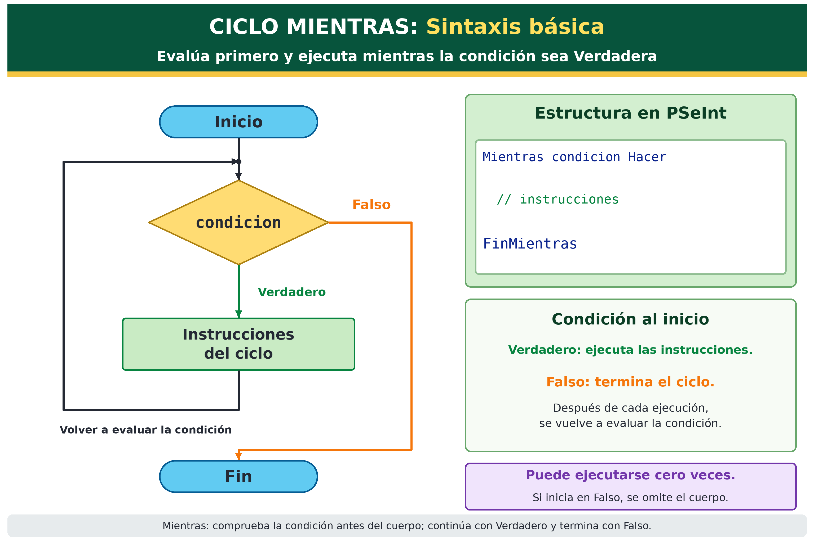
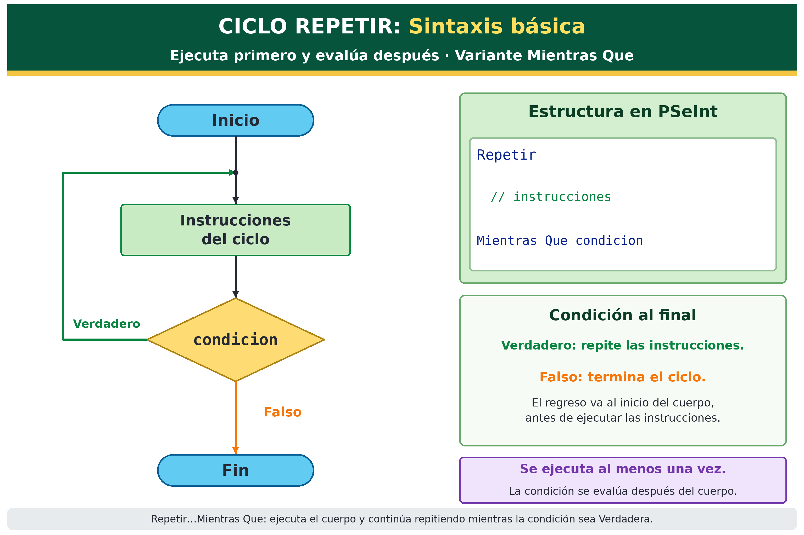
4.2 · CICLO DETERMINADO · CONTROLADO POR CONTADOR
Un ciclo determinado se usa cuando sabemos, o podemos calcular antes de empezar, cuántas veces debe repetirse la tarea.
¿Cómo funciona?
Se define un valor inicial, un límite y un paso. El contador registra el avance. El ciclo termina cuando el contador deja de cumplir la condición.
No es obligatorio usar Para: el mismo recorrido puede programarse con Mientras o Repetir.
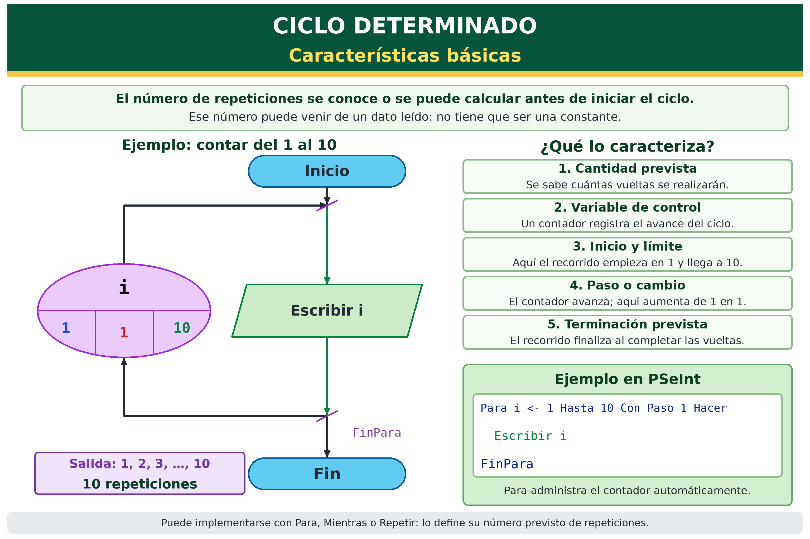
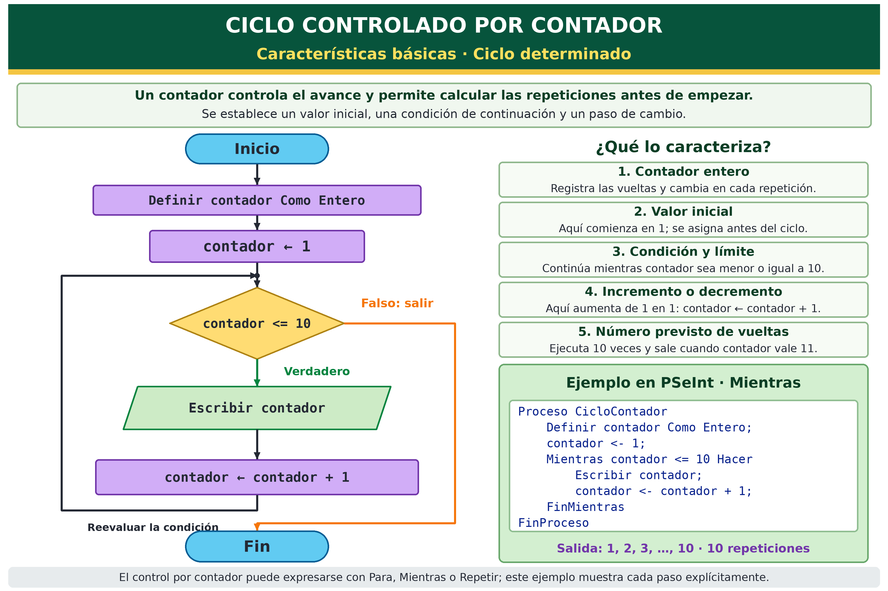
//PEDRO NUÑEZ YEPIZ MATR: 300523
//DESCR: CICLO DETERMINADO USANDO PARA
//FECHA: 13 OCTUBRE 2026
Algoritmo NYP_ACT4_01
Definir i Como Entero;
Para i = 1 Hasta 10 Con Paso 1 Hacer
Escribir i;
FinPara
FinAlgoritmo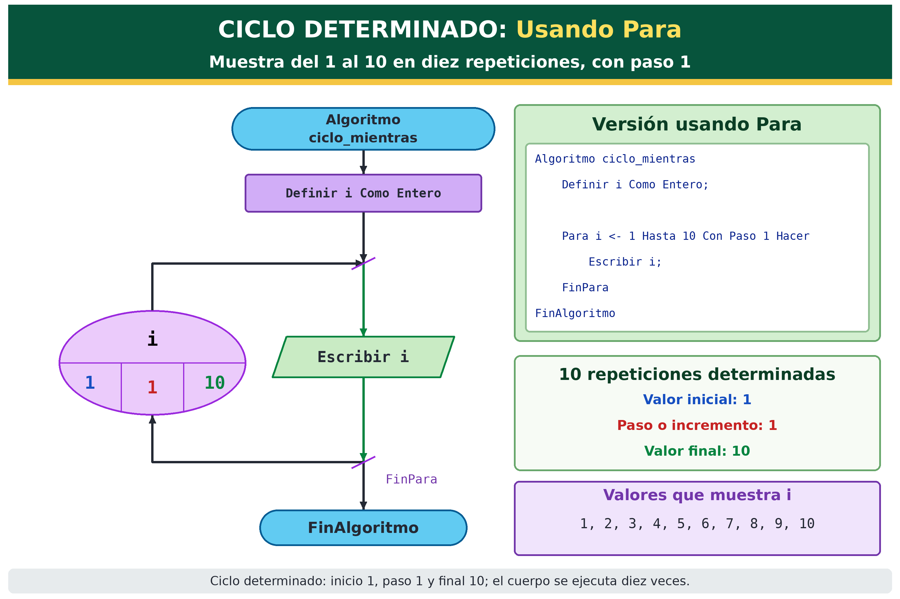
//PEDRO NUÑEZ YEPIZ MATR: 300523
//DESCR: CICLO DETERMINADO USANDO MIENTRAS
//FECHA: 13 OCTUBRE 2026
Algoritmo NYP_ACT4_02
Definir i Como Entero;
i = 1;
Mientras i <= 10 Hacer
Escribir i;
i = i + 1;
FinMientras
FinAlgoritmo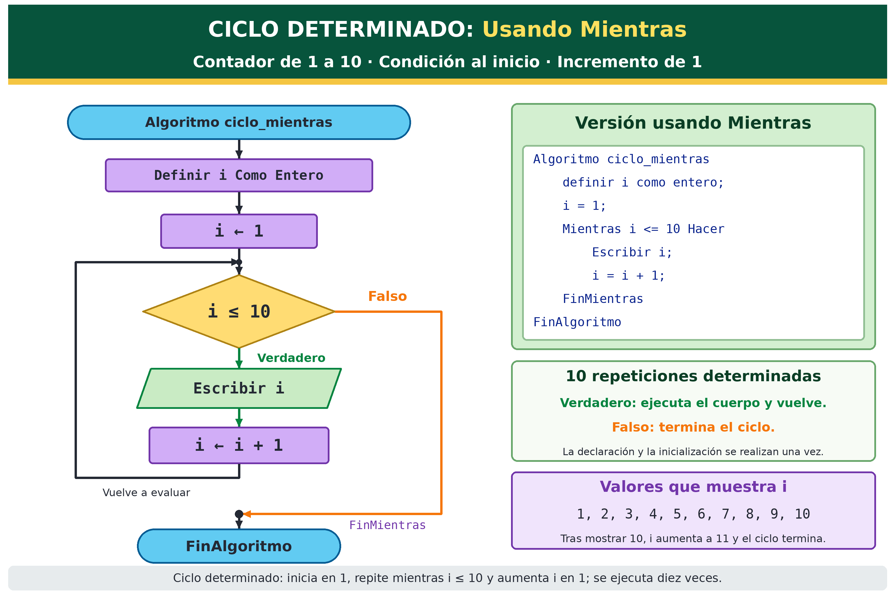
//PEDRO NUÑEZ YEPIZ MATR: 300523
//DESCR: CICLO DETERMINADO USANDO REPETIR
//FECHA: 13 OCTUBRE 2026
Algoritmo NYP_ACT4_03
Definir i Como Entero;
i = 1;
Repetir
Escribir i;
i = i + 1;
Mientras Que i <= 10;
FinAlgoritmo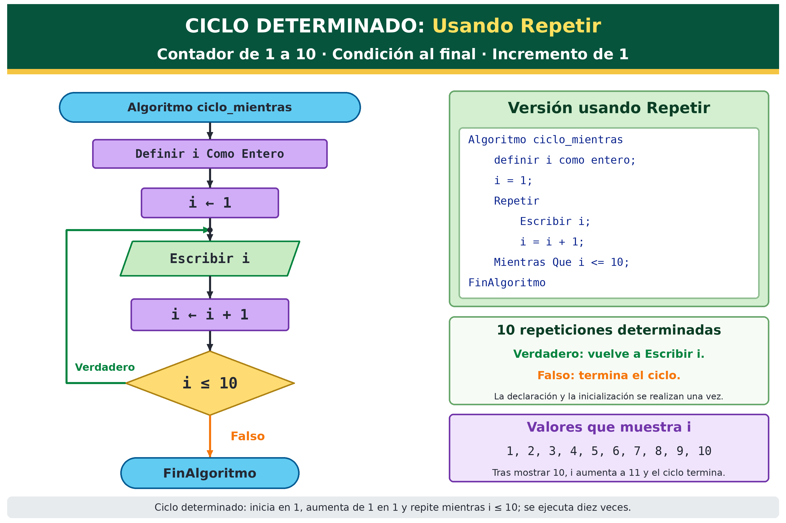
Explicación
Los tres ejemplos muestran del 1 al 10 y realizan diez repeticiones. La diferencia está en quién administra el contador y en qué momento se evalúa la condición, no en el tipo de ciclo.
4.3 · CICLO INDETERMINADO · CENTINELA O BANDERA
En un ciclo indeterminado la cantidad de vueltas depende de lo que ocurra durante la ejecución. No podemos saberla con certeza antes de comenzar.
Centinela y bandera
El centinela es un valor especial de entrada que indica el final. La bandera es una variable lógica que representa un estado, por ejemplo Verdadero para continuar y Falso para terminar.
Este tipo de ciclo suele escribirse con Mientras o Repetir. La diferencia principal es que Mientras revisa la condición antes y Repetir después.
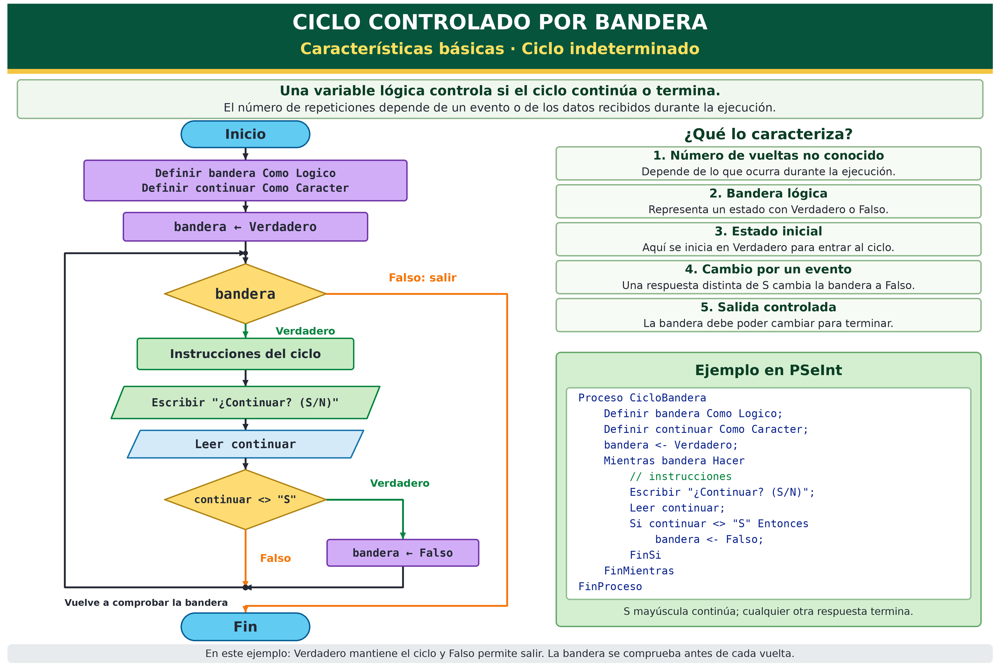
//PEDRO NUÑEZ YEPIZ MATR: 300523
//DESCR: CUENTA Y SUMA NUMEROS HASTA INGRESAR 0
//FECHA: 13 OCTUBRE 2026
Algoritmo NYP_ACT4_04
Definir i, num, suma Como Entero;
num = 5;
i = 0;
suma = 0;
Mientras num <> 0 Hacer
Escribir "DAME UN NUMERO O CERO (0) PARA SALIR: ";
Leer num;
i = i + 1;
suma = suma + num;
FinMientras
Escribir "EL TOTAL DE NUMEROS ES = ", i - 1;
Escribir "LA SUMA DE LOS NUMEROS = ", suma;
FinAlgoritmo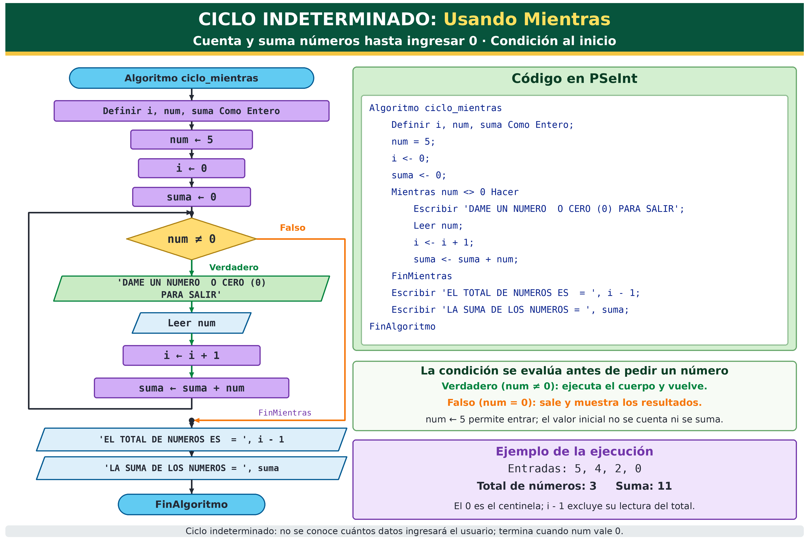
//PEDRO NUÑEZ YEPIZ MATR: 300523
//DESCR: CUENTA Y SUMA NUMEROS HASTA INGRESAR 0
//FECHA: 13 OCTUBRE 2026
Algoritmo NYP_ACT4_05
Definir i, num, suma Como Entero;
i = 0;
suma = 0;
Repetir
Escribir "DAME UN NUMERO O CERO (0) PARA SALIR: ";
Leer num;
i = i + 1;
suma = suma + num;
Mientras Que num <> 0;
Escribir "EL TOTAL DE NUMEROS ES = ", i - 1;
Escribir "LA SUMA DE LOS NUMEROS = ", suma;
FinAlgoritmo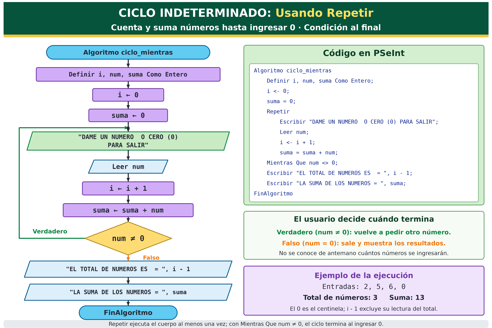
Explicación
En ambos ejemplos el usuario decide cuántos números ingresará. El 0 no se considera un dato válido: solo marca la terminación. Con Mientras se necesita un valor inicial que permita entrar al ciclo; con Repetir no, porque se ejecuta primero.
CICLO MIXTO · CONTADOR Y BANDERA
El ciclo mixto combina un límite conocido con una condición que puede terminar el proceso antes de llegar a ese límite.
¿Cómo funciona?
El contador limita el máximo de vueltas y la bandera representa si todavía se debe continuar. Mientras ambas condiciones sean verdaderas, el ciclo sigue.
Es útil en intentos de acceso, búsquedas con máximo de revisiones, procesos cancelables y sistemas donde existe un límite pero también una salida por evento.
//PEDRO NUÑEZ YEPIZ MATR: 300523
//DESCR: CICLO MIXTO CONTADOR Y BANDERA
//FECHA: 13 OCTUBRE 2026
Algoritmo NYP_ACT4_06
Definir contador Como Entero;
Definir bandera Como Logico;
Definir continuar Como Caracter;
contador = 0;
bandera = Verdadero;
Mientras (contador < 10) Y bandera Hacer
Escribir "¿CONTINUAR? (S/N): ";
Leer continuar;
Si continuar <> "S" Entonces
bandera = Falso;
FinSi
contador = contador + 1;
FinMientras
FinAlgoritmo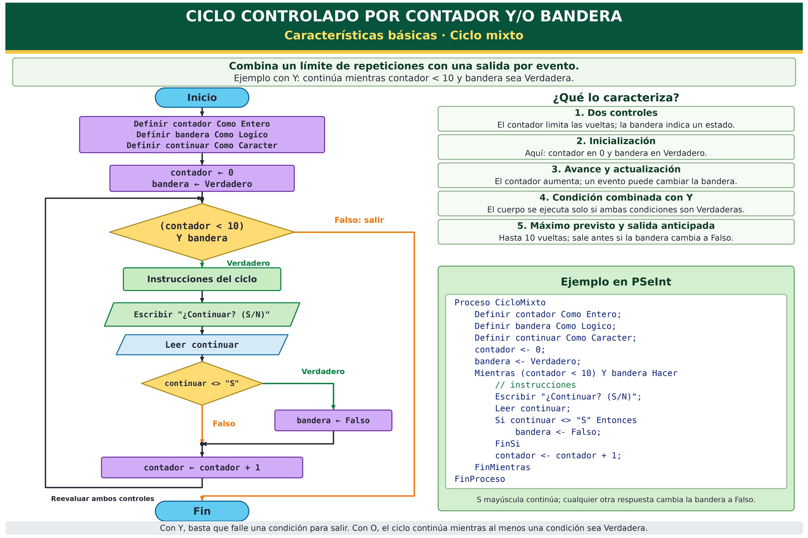
4.4 · CICLOS ANIDADOS
Un ciclo anidado coloca una repetición dentro de otra. El ciclo interno completa todas sus vueltas por cada vuelta del ciclo externo.
¿Para qué sirven?
Son útiles en tablas de multiplicar, matrices, renglones y columnas, combinaciones, horarios y cualquier problema con dos niveles de repetición.
Si el ciclo externo se repite 10 veces y el interno 10 veces por cada vuelta, el cuerpo interno se ejecuta 100 veces.
//PEDRO NUÑEZ YEPIZ MATR: 300523
//DESCR: TABLAS DE MULTIPLICACION CON DOS CICLOS PARA
//FECHA: 13 OCTUBRE 2026
Algoritmo NYP_ACT4_07
Definir i, j Como Entero;
Para i = 1 Hasta 10 Hacer
Limpiar Pantalla;
Escribir "TABLA DEL: ", i;
Para j = 1 Hasta 10 Hacer
Escribir i, " * ", j, " = ", i * j;
FinPara
Esperar Tecla;
FinPara
FinAlgoritmo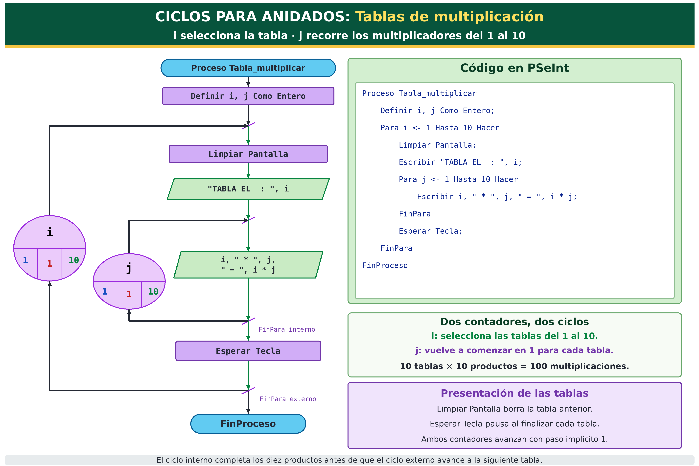
//PEDRO NUÑEZ YEPIZ MATR: 300523
//DESCR: TABLAS DE MULTIPLICACION CON REPETIR Y PARA
//FECHA: 13 OCTUBRE 2026
Algoritmo NYP_ACT4_08
Definir i, j Como Entero;
i = 1;
Repetir
Limpiar Pantalla;
Escribir "TABLA DEL: ", i;
Para j = 1 Hasta 10 Hacer
Escribir i, " * ", j, " = ", i * j;
FinPara
i = i + 1;
Esperar Tecla;
Mientras Que i <= 10;
FinAlgoritmo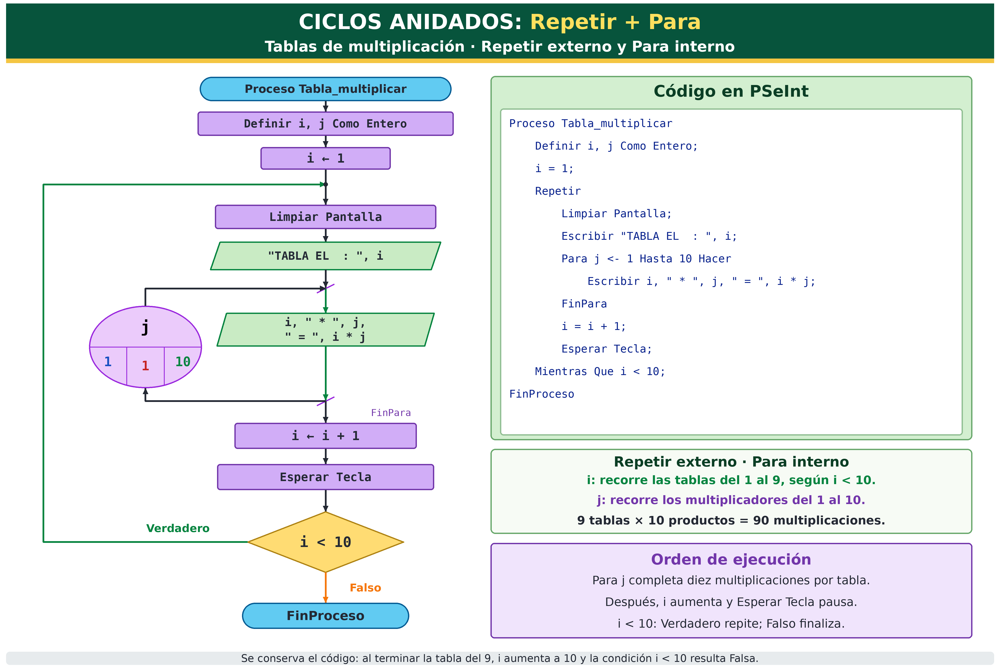
Explicación de la anidación
En el primer caso, i y j son controlados por Para. En el segundo, i se controla manualmente con Repetir mientras j sigue usando Para. Ambos enfoques muestran que las sentencias pueden combinarse.
PRÁCTICA · EJERCICIOS PARA RESOLVER
1 · Suma del 1 al N
Usa ciclo determinado, contador y acumulador.
2 · Captura hasta 0
Usa ciclo indeterminado y centinela.
3 · Máximo 5 intentos
Usa ciclo mixto con contador y bandera.
4 · Tablas del 1 al 10
Usa ciclos anidados.
1. ¿Qué caracteriza a un ciclo determinado?
2. ¿Qué sentencias pueden expresar un ciclo determinado?
3. ¿Cuál es la diferencia principal entre Mientras y Repetir?
4. ¿Qué es un centinela?
5. ¿Qué representa normalmente una bandera?
6. En un ciclo mixto, ¿qué pasa si la bandera cambia a Falso antes del límite?
7. Si el ciclo externo se repite 10 veces y el interno 10 veces por vuelta, ¿cuántas ejecuciones internas hay?
8. ¿Qué diferencia tipo de ciclo y sentencia de ciclo?
Determinado, indeterminado y mixto describen cómo se controla una repetición. Para, Mientras y Repetir son sentencias con las que podemos implementar esos controles. La elección correcta depende del problema.